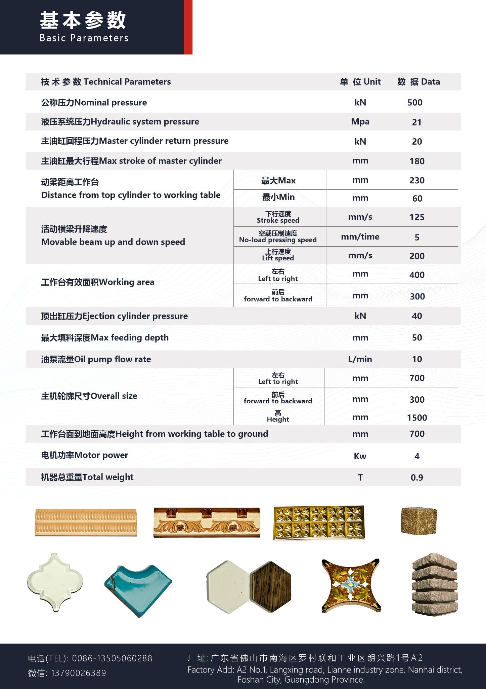

50T Experimental Press
Laboratory testing, product development and sample pressing.
▶ Watch on Instagram →
Automatic integrated experimental prototyping for product development, sample making and forming process verification.
HY-50适用于实验室及新产品研发，结构紧凑、操作方便，可用于陶瓷、玻璃、腰线、金属粉末及其他粉末冲压成型工艺测试。
Discuss Your Product →Watch the 50T experimental press and explore more machine operation clips and application examples on Instagram.
Laboratory testing, product development and sample pressing.
▶ Watch on Instagram →Original product and parameter sheets are shown directly without redesigning or altering the source material.


Ceramic, glass, decorative ceramic strips, metal powder and other special powder-forming applications.